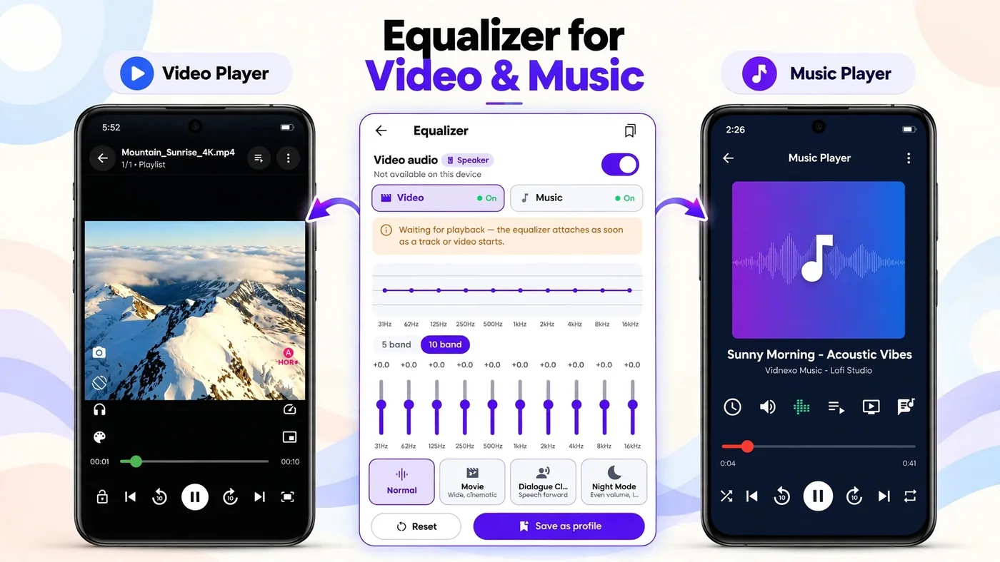

Vidnexa Player Equalizer: Get the Best Sound From Any Headphones
Most phone speakers and stock music apps play everything the same flat way — which means bass-heavy tracks sound thin and vocal-heavy tracks sound muddy. Vidnexa Player's built-in equalizer fixes that in a couple of taps, without needing a separate app.

Two equalizers in one: Video and Music
Open the equalizer and the first thing you'll notice is two separate tabs — Video and Music. That matters because a movie's dialogue-heavy audio and a song's full-range mix need different treatment. Vidnexa lets you tune each independently, so switching from watching a film to playing a playlist doesn't mean fighting with the wrong curve.
The equalizer also shows the audio source it's applying to (Speaker, or your connected headphones/Bluetooth device) and attaches automatically as soon as playback starts — you don't need to open it before pressing play.
5-band vs. 10-band mode
Vidnexa gives you a choice between 5-band and 10-band equalizer modes. In 10-band mode you get individual sliders for 31Hz, 62Hz, 125Hz, 250Hz, 500Hz, 1kHz, 2kHz, 4kHz, 8kHz and 16kHz — covering the full range from deep bass to airy treble. 5-band mode groups these into fewer, broader controls, which is quicker if you just want a rough adjustment rather than precise shaping.
Built-in presets
Rather than starting from a flat line every time, Vidnexa includes ready-made presets tuned for common situations:
- Normal — flat response, no coloring.
- Movie — a wider, more cinematic sound for films.
- Dialogue Clarity — pushes speech forward, ideal for talk-heavy content where you don't want to miss a word.
- Night Mode — evens out volume swings, so quiet scenes don't get lost and loud ones don't spike — useful for watching without disturbing others.
Tap any preset to apply it instantly, or use it as a starting point and fine-tune from there.
Creating and saving a custom setting
- Open the equalizer and choose the Video or Music tab, depending on what you're adjusting.
- Pick 5-band or 10-band mode.
- Drag the frequency sliders up or down until it sounds right on your headphones or speaker.
- Tap Save as profile to keep that exact setting for next time, or Reset to go back to flat.
Download Vidnexa Player Free
Video and Music equalizer with presets and custom bands, plus 4K/8K video with HDR+ picture modes, Network Player, files & photos — one free-to-download app, no sign-up or account needed.
▶ Get it on Google PlayBalance and channels
Below the presets, Vidnexa also includes a Balance control (Centre by default) to shift audio left or right — handy if one earbud sounds quieter than the other, or if a recording itself is unevenly mixed. A separate Sound effects section adds further options beyond the core equalizer for those who want to go further.
Best settings for headphones vs. speakers
Headphones and earbuds usually handle bass reasonably well already, so Dialogue Clarity or a small treble lift often sounds cleaner than a heavy bass curve. Phone speakers are the opposite — they struggle with low frequencies, so a gentle bass boost via the Custom bands helps them sound fuller, while pushing treble too far can make them harsh. If you switch often between headphones and a speaker, save each as its own profile so you can jump between them.
Frequently asked questions
Does Vidnexa Player have a built-in equalizer?
Yes, with separate controls for Video and Music audio, 5-band and 10-band modes, ready-made presets, and custom band adjustment — all free, no extra app needed.
What equalizer presets does Vidnexa Player offer?
Presets include Normal, Movie (wide, cinematic), Dialogue Clarity (speech forward) and Night Mode (even volume), alongside full manual control.
What is the difference between 5-band and 10-band mode?
10-band mode gives finer control over more frequency points (31Hz to 16kHz) than 5-band mode, useful if you want to shape the sound more precisely.
Can I save my own custom equalizer setting?
Yes. Adjust the bands to taste and tap Save as profile to reuse that exact setting later.
Does the equalizer work for both videos and music?
Yes. Vidnexa Player has separate Video and Music tabs in the equalizer, so you can tune each independently.
Tune your sound today
Video and Music equalizer with presets and custom bands, plus 4K/8K video with HDR+ picture modes, Network Player, files & photos — one free-to-download app, no sign-up or account needed.
▶ Get it on Google Play